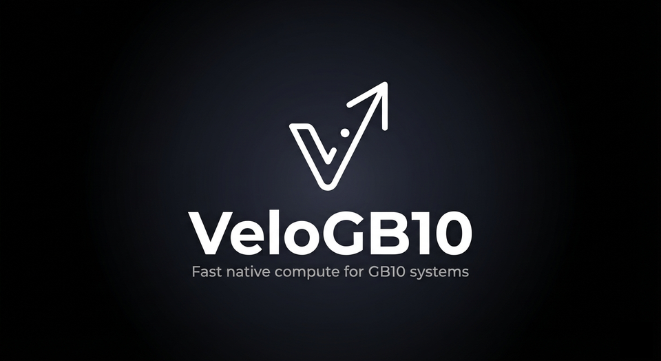

veloengine.ai · not published yet
This site is being built.
veloengine.ai will be the home of veloGB10 — a from-scratch Rust + CUDA inference engine for NVIDIA GB10 systems (DGX Spark and compatible OEM boxes): NVFP4 tensor-core serving, bitwise-lossless MTP speculation, and TP=2/TP=4 as a speed mode. One binary plus its PTX kernels.
Until it opens, everything is in the repository: the design notes, measured
throughput traces, the per-model setup guides and the changelog. Build it with
cargo build --release, or take a prebuilt package from the releases
page.
github.com/sf-stav/veloGB10
© 2026 Stav Katsoulis · Apache-2.0